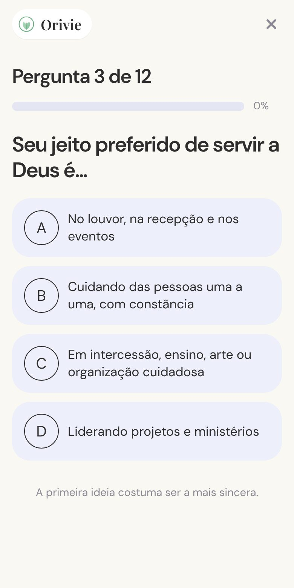
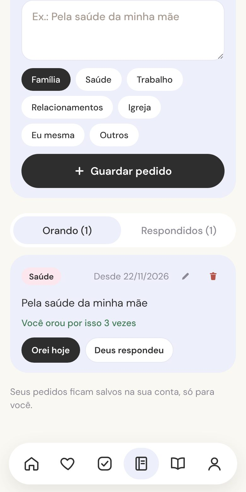
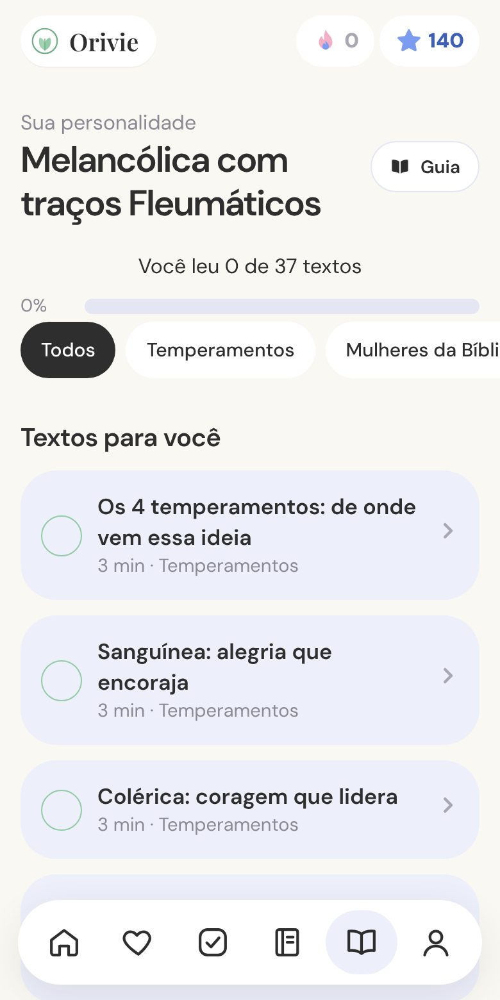
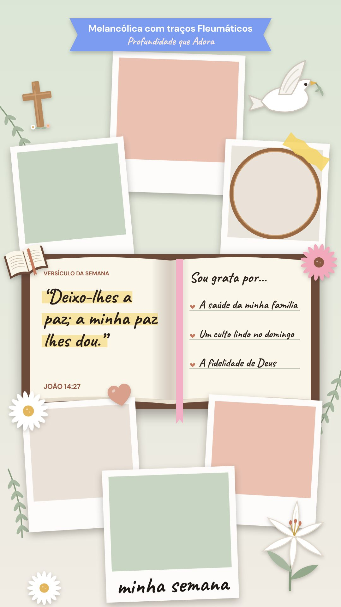

Descubra quem Deus te criou para ser
Conheça o seu temperamento à luz da Bíblia, entenda suas forças e seus desafios e cresça no caráter de Cristo, um dia de cada vez.
Você já se sentiu assim?
Você não está sozinha. Conhecer o jeito com que Deus te criou é o primeiro passo para crescer com leveza.
Um app para você se conhecer e crescer com Deus
O Orivie une os 4 temperamentos (sanguíneo, colérico, melancólico e fleumático), uma ferramenta antiga de autoconhecimento popularizada no meio cristão, com a Palavra de Deus. Você descobre seu temperamento principal e secundário e recebe conteúdos, versículos e práticas pensados para o seu jeito.
Alegria que encoraja
Alegre, comunicativa e cheia de vida.
a mulher samaritana
Coragem que lidera
Determinada, prática e corajosa.
Débora
Profundidade que adora
Sensível, profunda e detalhista.
Ana
Paz que sustenta
Calma, leal e pacificadora.
Rute
Temperamento não é destino: o Espírito Santo transforma o caráter (Gálatas 5:22-23).
O que você recebe
Teste de temperamento
12 perguntas e o resultado com o seu temperamento principal e secundário.
Resultado completo
Suas forças, seus desafios, o fruto do Espírito em foco, versículos e personagens bíblicas com o seu jeito.
Versículo e oração do dia
Escolhidos para o seu temperamento, todos os dias.
Biblioteca Aprender
Mais de 35 textos: mulheres da Bíblia, temperamentos e as dores do dia a dia, como ansiedade, comparação, perdão e cansaço.
Diário de oração
Registre pedidos, marque quando orou e guarde os testemunhos quando Deus responder.
Checklist da fé
Orei, Li a Palavra, Servi e Agradeci, com sugestões para o seu jeito.
Mural da fé
Uma colagem com suas fotos, o versículo da semana e "Sou grata por...", pronta para postar no story.
Ori, sua assistente
Versículos, orações e dicas para quando você estiver ansiosa, cansada ou se comparando.
Veja por dentro




Como funciona
Crie sua conta
E faça o pagamento por PIX direto no app.
Receba seu código
Envie o comprovante pelo WhatsApp e receba o seu código de acesso.
Comece sua jornada
Faça o teste e descubra o seu temperamento à luz da Bíblia.
Acesso completo ao Orivie
R$19,90
1 ano de acesso · sem mensalidade
- Teste de temperamento cristão
- Resultado completo com versículos e personagens bíblicas
- Biblioteca com mais de 35 textos
- Diário de oração
- Checklist da fé
- Mural da fé
- Ori, sua assistente
- Seus dados salvos na nuvem: entre de qualquer celular
Pagamento por PIX. Dúvidas? Fale com a gente no WhatsApp.
Perguntas frequentes
O Orivie é para católicas ou evangélicas?
Para as duas. O conteúdo é baseado na Bíblia, sem doutrinas de uma denominação específica.
Os 4 temperamentos são bíblicos?
Não. Eles são uma ferramenta antiga de autoconhecimento, popularizada no meio cristão por autores como Tim LaHaye e Florence Littauer. No Orivie, eles são um mapa para você se conhecer, sempre à luz da Palavra.
Como recebo o acesso?
Crie sua conta no app, pague o PIX de R$19,90, envie o comprovante pelo WhatsApp e você recebe o seu código de acesso.
Funciona no celular?
Sim. É só abrir o link no navegador, sem precisar baixar nada. Seus dados ficam salvos na nuvem, então você pode entrar de qualquer aparelho.
Por quanto tempo tenho acesso?
Por 1 ano a partir da liberação do seu código, sem mensalidade.
O app substitui terapia ou acompanhamento pastoral?
Não. O Orivie é uma ferramenta de autoconhecimento e devoção. Em momentos difíceis, procure sua liderança e um profissional de saúde. Se precisar conversar agora, o CVV atende pelo 188, 24 horas.
E se eu me arrepender da compra?
Você pode pedir o reembolso em até 7 dias após a compra, como garante o Código de Defesa do Consumidor. É só falar com a gente pelo WhatsApp.
Salmos 139:14
Você foi feita de modo especial e admirável.
Descubra o seu temperamento e comece hoje a sua jornada com Deus.
Fazer meu teste agora